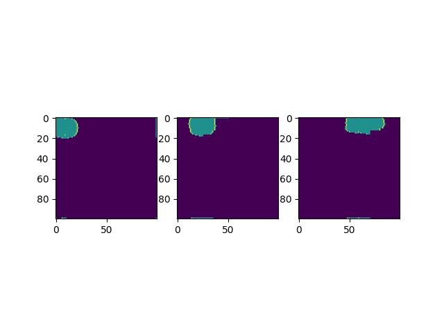

A decentralized approach removes the dependency on any one of the systems in comparison to a centralized approach. The major behaviors investigated in the project include but are not limited to collective perception and localization, exploration, mapping, and object detection or foraging. These behaviors have been implemented using frontier detection, path planning, trajectory tracking, obstacle avoidance, and communication. We also built our custom simulator from the ground up using Python, to accurately visualize, understand, and verify the behaviors as intended.
Like most search and rescue operations, the bounded environment is unknown with static obstacles and a single target object. The information available to the robots include sensing area (circle with a radius of 10m) and estimations of the area covered by other robots. Each robot has a local map that gets updated with objects and areas it has covered. These local maps are estimated using ellipses and communicated to other robots in a reduced data format using a transformation matrix. Enabling faster communication and maximum exploration. The exploration technique exhibits a behavior similar to a combination of levy walk and Brownian motion. It moves to the sampled point (goal position) if it meets certain conditions. The exploration carries on till the target object is found.
Two separate approaches have been developed for motion planning. The first approach utilizes RRT* to choose the best trajectory to the goal position and a PID controller to track the trajectory. Paired along with a potential gradient-based obstacle avoidance algorithm. The second approach uses a non-linear Model Predictive Controller (MPC) for obstacle avoidance and preventing collisions between robots. With the above-mentioned algorithms and control strategies we were able to find the target object and simulate the results for verification.
Initial and final state of map after exploration by 3 robots.
--> View on GitHub View PDF